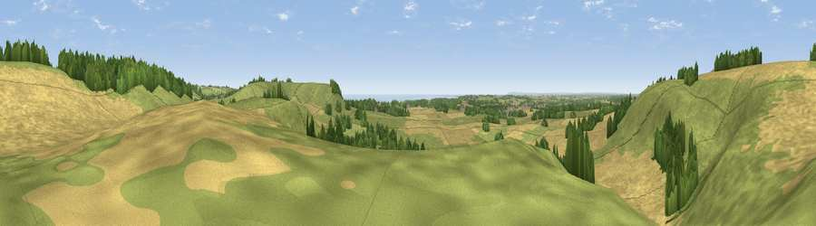

Viewpoint near Postling
#14049 in England · top 30% of its area beats it · near PostlingThe view, rendered

A 360° render of this exact spot computed from the terrain model, tree cover and land cover — summer colours, afternoon light, calibrated against photographs of famous viewpoints. Real trees, hedges and buildings will differ in detail.
The panorama
Grey silhouette: terrain skyline in each direction (720 bearings, Earth curvature and refraction included). Dashed green: skyline with trees (+15 m) and buildings (+8 m) as obstacles. Blue strip: how far the ground is visible on each bearing.
Where the view opens
Wedge length = distance to the farthest visible ground on that bearing (vegetation-aware). Rings at 10, 25 and 50 km.
What fills the view
53% grassland · 32% cropland · 13% woodland · 1% built-up ·
Angular shares of the visible panorama (visual magnitude), not map area. Landscape diversity 0.46 (0–1 Shannon).
Key numbers
More beautiful places nearby
The staircase of upgrades: each row has a higher view potential than everything closer. Driving times are estimates from straight-line distance, calibrated against real road routing — check an actual route before setting out.
| Place | Direction | Drive | Score |
|---|---|---|---|
| Viewpoint near Postling | WNW · 1 km | ~3 min | 71.2 |
| Tolsford Hill | SE · 2 km | ~5 min | 77.9 |
| Viewpoint near Capel-le-Ferne | ESE · 10 km | ~19 min | 80.2 |
| Viewpoint near Willingdon | WSW · 68 km | ~91 min | 83.4 |
| Wilmington Hill | WSW · 70 km | ~93 min | 85.4 |
| Viewpoint near Alciston | WSW · 73 km | ~97 min | 85.8 |
| Viewpoint near Alciston | WSW · 73 km | ~97 min | 86.8 |
| Firle Beacon | WSW · 74 km | ~97 min | 88.9 |
51.11492, 1.06079 · source: screening · position refined by local search. Computed location — check access rights before visiting.